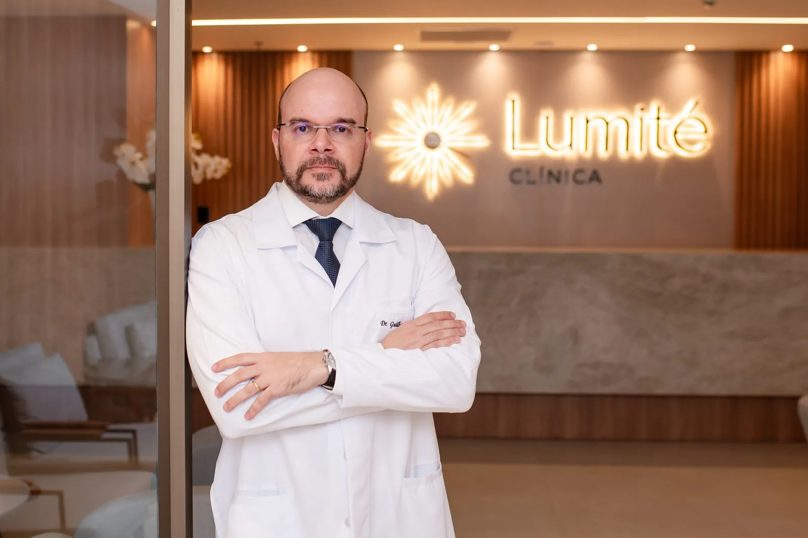
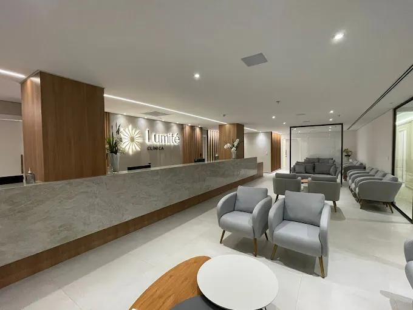

Atendimento especializado para Alzheimer, Parkinson e outras condições neurológicas
Conheça meu currículo
Mestre e Doutor em neurologia pela FMRP-USP.
Membro titular da Academia Brasileira de Neurologia, da International Parkinson and Movement Disorder Society e da Alzheimer’s Association International Society to Advance Alzheimer’s Research and Treatment.
Atendo em Ribeirão Preto desde 2005, com ampla experiência em doenças neurológicas.
Nossos diferenciais
- 1 Foco total no paciente
- 2 Respeito e pontualidade
- 3 Acesso direto ao médico por WhatsApp

- 4 Agenda flexível: presencial, domiciliar ou teleconsultas
- 5 Estacionamento coberto e com manobrista
- 6 Espaço amplo e confortável
Informação para pacientes
Doença de Alzheimer
Tratamento precoce da doença de Alzheimer
O que são os anticorpos antiamiloide, para quem são indicados e por que o diagnóstico precoce importa.
Ler o texto
Doença de Parkinson
Novidades no tratamento da doença de Parkinson
Estimulação cerebral profunda, ultrassom focalizado e levodopa em infusão contínua nas fases avançadas.
Ler o texto
Vídeos para cuidadores
Orientações curtas para familiares de pessoas com Alzheimer e outras demências.


O que dizem os pacientes
"Dr. Guilherme é um excelente médico, explica muito bem o tratamento e é muito atencioso. Sempre podemos contar com ele. Recomendo de olhos fechados!" Magno S.
"Clínica séria e comprometida. Médico altamente qualificado e atendimento excelente das secretárias e atendentes. Acima do padrão." Raphael G.
"Clínica muito organizada, ampla, ambiente agradável. E quanto ao Dr. Guilherme, ele é um santo na vida do meu marido." Vanessa V.

Onde estamos
Segunda a sexta, das 8h às 18h.